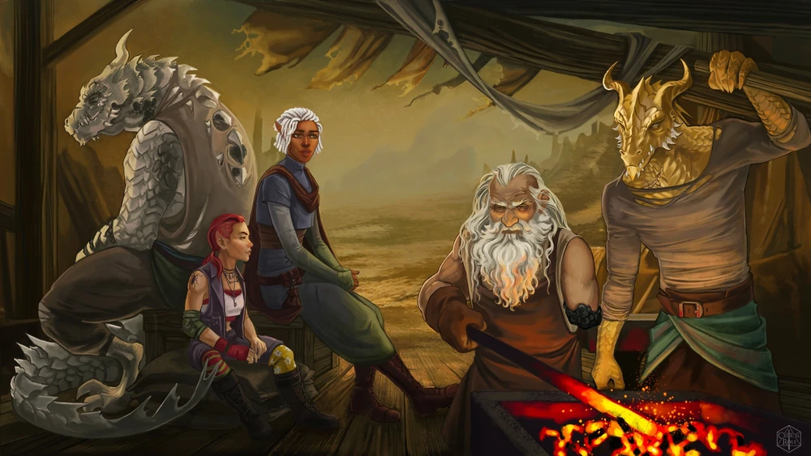
Art By: @agarthanguideIn the oppressive fortress prison of Rybad-Kol, the Strife Emperor rules with an iron fist, crushing hope at every turn. Amidst the despair, Garen, a seasoned dwarf stonecutter, and Nia, a hopeful half-elven medic, form an unlikely alliance. While Garen is worn down by the brutal treatment of the prison and his own haunting past, Nia clings to the belief that change is possible. Together, they devise a plan to escape, aided by the mysterious happenings within the prison’s walls. As they navigate the dangers and unravel secrets, they manage to free a group of prisoners and begin their journey into the unknown.
After escaping the crumbling fortress, the group—now including the dragonborn Crokas and the halfling Fiedra—ventures into the harsh wilderness, where they are tested by starvation, exhaustion, and a powerful storm that seems to answer their desperate prayers. As Nia’s connection with the divine strengthens, they find a brief respite in Torm’s Hill, a refugee haven, where they battle both internal and external forces. Their journey becomes one of survival, with Nia and her companions facing betrayals, losses, and the brutal reality of a world ravaged by the Strife Emperor’s reign.
The group eventually learns of Nia’s sister, Liana, and her mysterious connection to the Moonweaver. As Nia’s quest for her sister unfolds, the group discovers hidden treasures, powerful artifacts, and truths that challenge their understanding of the gods and their roles in the world. Along the way, they encounter dangerous creatures, allies from the past, and untold mysteries that lead them to Vasselheim, where Nia hopes to find the answers to her destiny. Along with their personal growth, the bonds between the group members deepen, and they struggle with the weight of their responsibilities.
The final leg of their journey brings them face to face with the forces of the Betrayer Gods, culminating in a battle that will determine the fate of their world. In the aftermath, the group begins to find their place in a new world, where the gods are fading, and their actions will shape the future. Nia and her companions confront their pasts, and through trials, reconciliation, and sacrifice, they work to protect the divine gate and ensure that hope will endure, even in the face of the gods’ absence. Together, they forge a new path, one where the remnants of the past and the promise of change coexist, and the future remains uncertain but filled with possibility.
The characters are:
Crokas
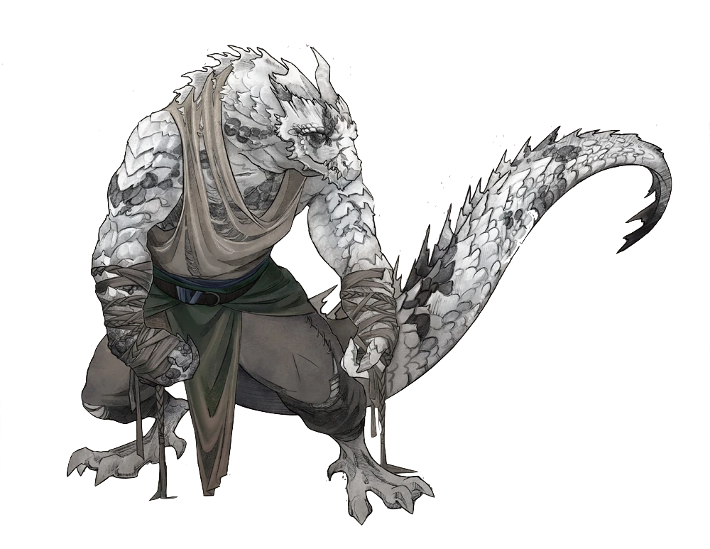
Crokas is a white dragonborn monk who hatched about fifteen years before the Divergence. Raised by Fiedra Marrow, a halfling girl who won his egg in a card game, he grew up in an urban environment until he and Fiedra were captured and taken to Rybad-Kol when he was around ten or eleven. There, Crokas became Fiedra’s bodyguard, and together they worked in the kitchens while forming their own gang, the Roaches.
Erro
Mordaurum
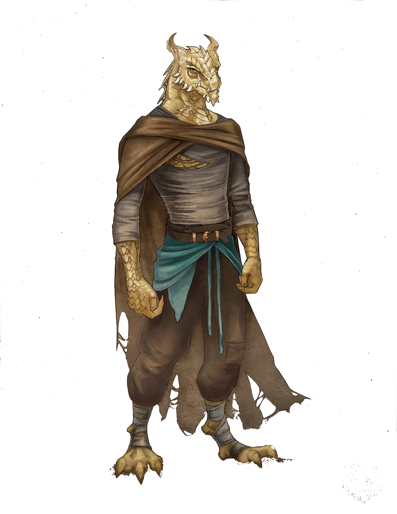
Erro Mordaurum, a gold dragonborn ranger, was born in Issylra in the town of Seagate, where his devout parents aided refugees fleeing to Vasselheim. When he was young, a battle involving Asmodeus led to his father’s death, forcing him and his mother to flee across the ocean to Gwessar. Raised in the wilds by a mentor named Skoll, Erro learned survival and druidic magic, but after his mother and later Skoll passed away, he became a wanderer, disillusioned with life. Near death, he met a dragonborn woman named Donaea by a lake in Snowgrave Pass, and for a year, they lived together until soldiers of the Strife Emperor attacked, killing her and nearly killing him. Grief-stricken, Erro spent decades mapping Gwessar, avoiding civilization, and witnessing divine conflicts, one of which saw a god fall. Eventually, he was captured by the forces of the Betrayer Gods and taken to Rybad-Kol.
Fiedra Marrow
Fiedra Marrow is a halfling rogue and kitchen worker who grew up orphaned in a city, eventually becoming the leader of a gang. Around age 13, she won a dragon egg in a card game, which later hatched into Crokas, whom she raised. When Crokas was ten or eleven, both were captured and taken to Rybad-Kol, where Fiedra worked in the kitchens, gaining some influence and the trust of at least one guard. Crokas served as her bodyguard, and together they spent several years in the Slop, forming a gang known as the Roaches with other workers.
Garen
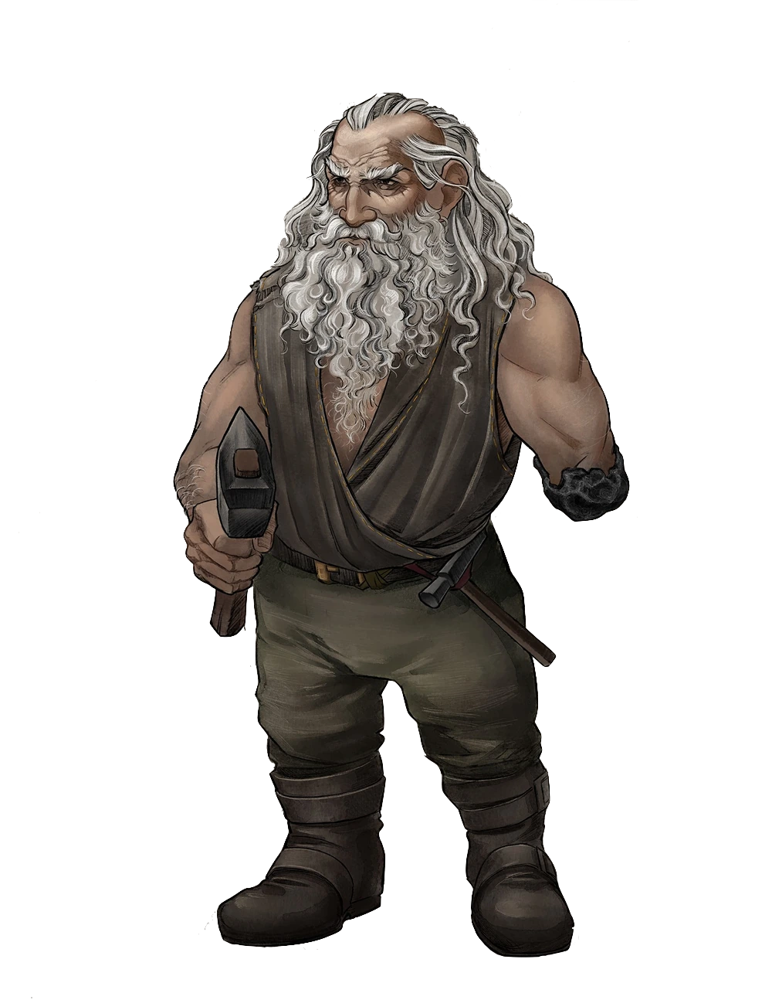
Garen Hearthheart, a dwarf stonemason, was captured by the forces of the Betrayer Gods about a century before the Divergence and taken to the fortress prison of Rybad-Kol, allegedly becoming its first prisoner. Forced to work on the prison’s modifications due to his expertise, he subtly introduced structural weaknesses into the stonework. During his labor, a basalt block crushed his left arm, leading to its amputation. After years of hardship and suffering, Garen’s mind deteriorated, leaving him unable to clearly recall his life before imprisonment.
Rei’Nia
Saph
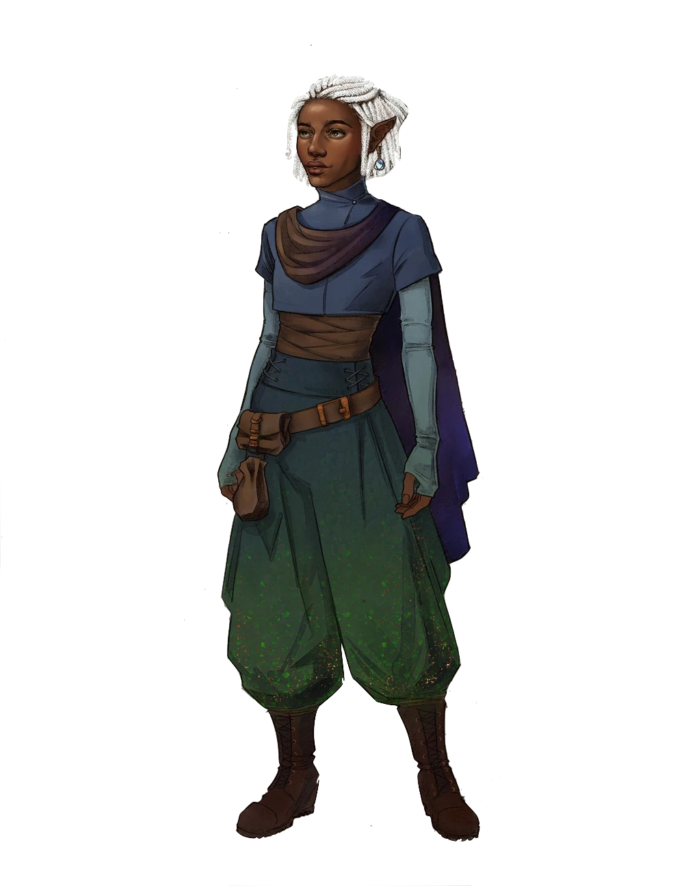
Rei’nia Saph, a half-elf nurse and cleric, grew up during the Calamity alongside her younger sister, Liana. They were both inspired by their tiefling friend Luz, who shared stories of Sehanine the Moonweaver, shaping their personal beliefs connected to the goddess and Catha. Toward the end of the war, the sisters were separated from their parents and traveled across Gwessar with companions. Liana eventually left to search for their family, promising to meet Nia at Torm’s Hill. Nia traveled under the guidance of Erro Mordaurum, but their journey was cut short when they were captured and taken to the prison fortress of Rybad-Kol.
# Surprise Round
add_damage('Garen', 'Bludgeoning', 5)
# Round 1
add_damage('Garen', 'Bludgeoning', 5)
increment_kills('Garen')
# Prison Guard# Pre-Initiative
add_damage('Erro', 'Fire', 2)
# Round 1
add_damage('Fiedra', 'Piercing', 4)
add_damage('Crokas', 'Slashing', 9)
add_damage("Rei'Nia", 'Slashing', 3)
add_enemy_damage('SE Guards', 'Slashing', 31)
update_damage_taken('Erro', 9)
update_damage_taken('Crokas', 6)
update_damage_taken('Garen', 10)
update_damage_taken("Rei'Nia", 6)
add_damage('Erro', 'Fire', 12)
add_enemy_damage('SE Captain', 'Slashing', 7)
update_damage_taken('Erro', 7)
update_times_knocked_unconscious('Erro')
# Knocked unconscious by the Captain of the Strife Emperor's Guard strike
# Round 2
add_damage('Fiedra', 'Piercing', 5)
add_damage('Crokas', 'Lightning', 15)
# Stormgirdle
add_damage('Garen', 'Bludgeoning', 10)
add_damage("Rei'Nia", 'Radiant', 11)
# Inflict Wounds
increment_kills("Rei'Nia")
# Captain of the Strife Emperor's Guard
add_enemy_damage('SE Guards', 'Slashing', 4)
update_damage_taken('Crokas', 4)
update_times_knocked_unconscious('Crokas')
# Knocked unconscious by the Soldier of the Strife Emperor's Guard strike
# Erro fails a death save
# Round 3
add_damage('Fiedra', 'Piercing', 9)
increment_kills('Fiedra')
# Soldier of the Strife Emperor's Guard
update_healing('Crokas', 1)
# Nat 20 on the death save brings him to 1 HP
add_damage('Crokas', 'Slashing', 18)
increment_kills('Crokas')
# Soldier of the Strife Emperor's Guard
add_damage('Garen', 'Bludgeoning', 10)
increment_kills('Garen')
# Soldier of the Strife Emperor's Guard
update_healing("Rei'Nia", 4)
# Cure Wounds on Erro, bringing him back to consciousness
add_enemy_damage('SE Guards', 'Slashing', 17)
update_damage_taken("Rei'Nia", 8)
update_times_knocked_unconscious("Rei'Nia")
# Knocked unconscious by the Soldier of the Strife Emperor's Guard strike
update_damage_taken('Garen', 9)
# Round 4
add_damage('Fiedra', 'Piercing', 10)
increment_kills('Fiedra')
# Soldier of the Strife Emperor's Guard
add_damage('Crokas', 'Slashing', 8)
increment_kills('Crokas')
# Soldier of the Strife Emperor's Guard
# Garen fails a death save
# Rei'Nia fails a death save
update_healing('Erro', 1)
# Cure Wounds on Rei'Nia, bringing her back to consciousness# Round 1
add_damage('Fiedra', 'Piercing', 10)
add_damage('Fiedra', 'Poison', 3)
add_enemy_damage('Devil', 'Piercing', 7)
update_damage_taken('Fiedra', 7)
update_times_knocked_unconscious('Fiedra')
# Knocked unconscious by the Bearded Devil's beard attack
add_enemy_damage('Devil', 'Piercing', 5)
update_damage_taken('Garen', 5)
add_damage('Crokas', 'Slashing', 12)
add_damage("Rei'Nia", 'Piercing', 1)
update_healing("Rei'Nia", 4)
# Healing Word on Fiedra, bringing her back to consciousness
add_damage('Garen', 'Bludgeoning', 10)
add_damage('Erro', 'Slashing', 8)
increment_kills('Erro')
# Bearded Devil
add_enemy_damage('Imp', 'Piercing', 7)
add_enemy_damage('Imp', 'Poison', 5)
update_damage_taken("Rei'Nia", 12)
update_times_knocked_unconscious("Rei'Nia")
# Knocked unconscious by the Imp's stinger
# Round 2
update_healing('Fiedra', 9)
# Feeds Rei'Nia a Healing Nut, bringing her back to consciousness
add_damage('Fiedra', 'Piercing', 16)
add_damage('Fiedra', 'Poison', 3)
add_enemy_damage('Devil', 'Slashing', 6)
update_damage_taken('Garen', 6)
update_times_knocked_unconscious('Garen')
# Knocked unconscious by the Bearded Devil's glaive swipe
add_damage('Crokas', 'Slashing', 9)
increment_kills('Crokas')
# Imp
update_healing("Rei'Nia", 6)
# Feeds Garen a Healing Nut, bringing him back to consciousness
add_damage('Garen', 'Bludgeoning', 8)
add_damage('Erro', 'Slashing', 7)
# Round 3
add_enemy_damage('Devil', 'Piercing', 5)
update_damage_taken('Erro', 5)
add_damage('Erro', 'Force', 5)
# Honor's Last Stand
add_damage('Crokas', 'Slashing', 15)
add_damage("Rei'Nia", 'Piercing', 3)
add_damage('Garen', 'Bludgeoning', 11)
increment_kills('Garen')
# Bearded Devil# Round 1
# Round 2
add_enemy_damage('Lord Callister', 'Piercing', 6)
update_damage_taken('Fiedra', 6)
# Round 3
add_enemy_damage('Lord Callister', 'Piercing', 6)
update_damage_taken('Fiedra', 6)
update_times_knocked_unconscious('Fiedra')
# Knocked unconscious trying to run away from Lord Callister
# Round 4
# Fiedra fails a death save
add_damage('Crokas', 'Slashing', 10)# Surprise Round
add_damage('Crokas', 'Lightning', 9)
# Lightning Bolt
add_damage('Erro', 'Slashing', 3)
add_damage('Garen', 'Bludgeoning', 68)
increment_kills('Garen')
# Devil
# Round 1
add_enemy_damage('Devil', 'Slashing', 6)
update_damage_taken('Garen', 6)
add_damage('Crokas', 'Lightning', 9)
# Stormgirdle
add_damage('Crokas', 'Lightning', 13)
# Lightning Bolt
update_healing("Rei'Nia", 6)
# Healing Word on Garen
add_damage('Erro', 'Slashing', 11)
add_damage('Garen', 'Bludgeoning', 18)
# Round 2
add_enemy_damage('Imp', 'Piercing', 5)
add_enemy_damage('Imp', 'Poison', 1)
update_damage_taken('Garen', 6)
add_enemy_damage('Devil', 'Slashing', 17)
update_damage_taken("Rei'Nia", 7)
update_damage_taken('Garen', 4)
update_damage_taken('Erro', 6)
add_damage('Crokas', 'Lightning', 10)
# Stormgirdle
add_damage('Crokas', 'Lightning', 11)
# Lightning Bolt
increment_kills('Crokas')
# Lord Callister
update_healing("Rei'Nia", 7)
# Healing Word on Garen
add_damage('Erro', 'Slashing', 10)
increment_kills('Erro')
# Devil
add_enemy_damage('Asmodeus', 'Fire', 26)
update_damage_taken('Erro', 26)
update_times_killed('Erro')
# Erro saves Garen's life by taking a firebolt from Asmodeus
add_damage('Garen', 'Bludgeoning', 11)
increment_kills('Garen')
# Devil
# Round 3
add_enemy_damage('Imp', 'Piercing', 6)
update_damage_taken('Garen', 6)
add_damage('Crokas', 'Lightning', 12)
# Stormgirdle
increment_kills('Crokas')
# Imp# Garen is punished for falling unconscious due to exhaustion
update_damage_taken('Garen', 9)
# Attempting to get Crokas about of the Wandering Walls
add_damage('Erro', 'Fire', 14)
add_damage('Garen', 'Bludgeoning', 8)
add_damage('Crokas', 'Bludgeoning', 9)
# Bringing Fiedra back
update_healing("Rei'Nia", 6)
# Healing Word on Fiedra bringing her back to consciousness
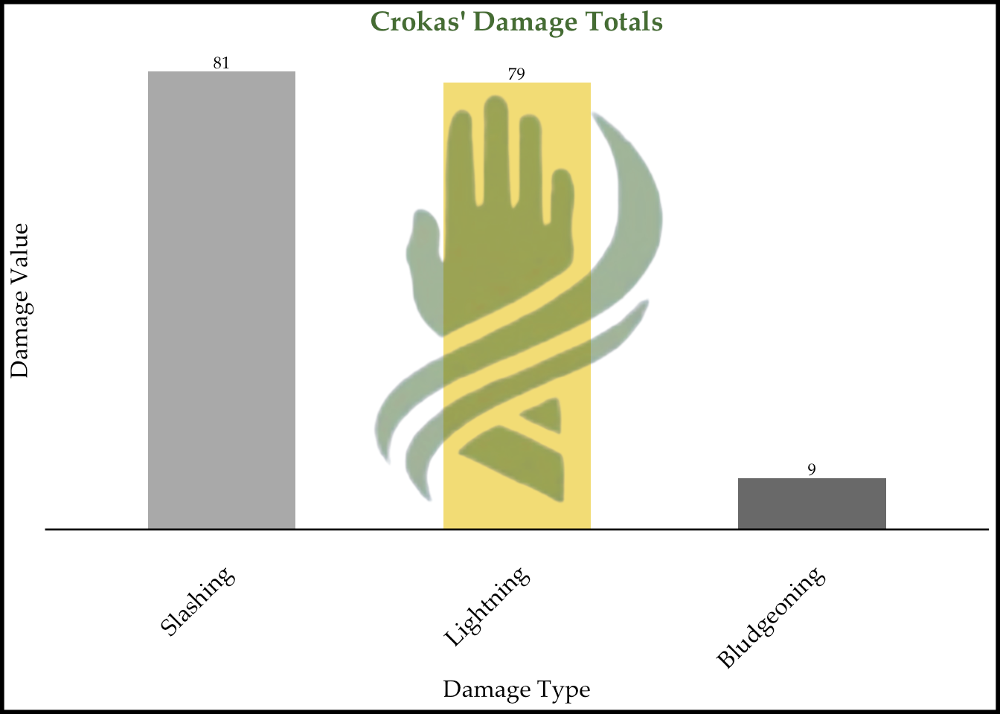
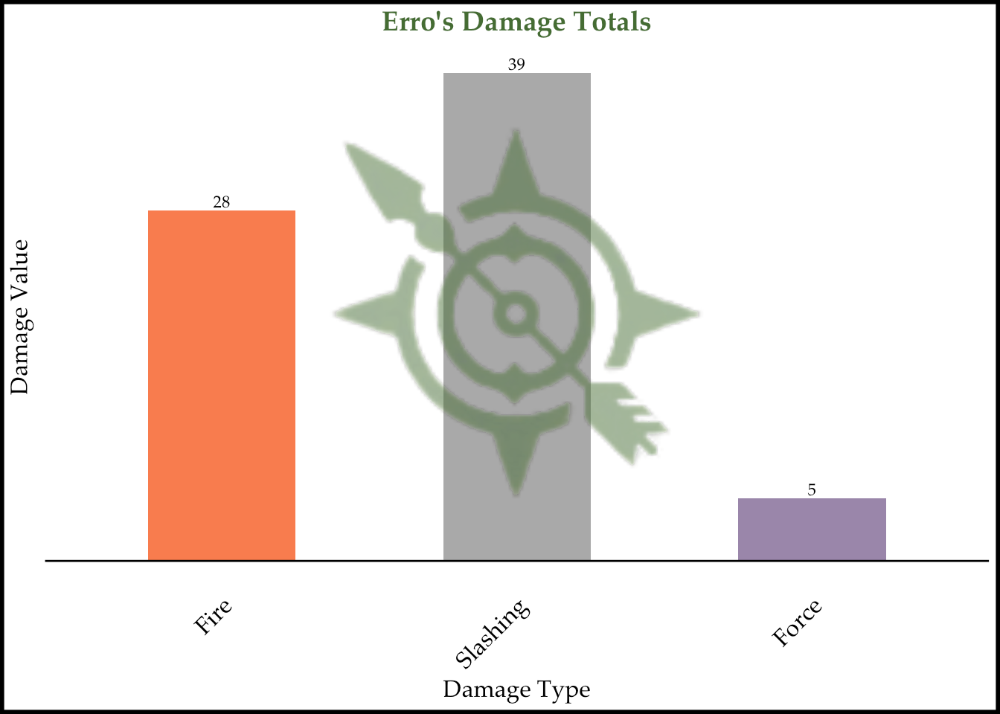
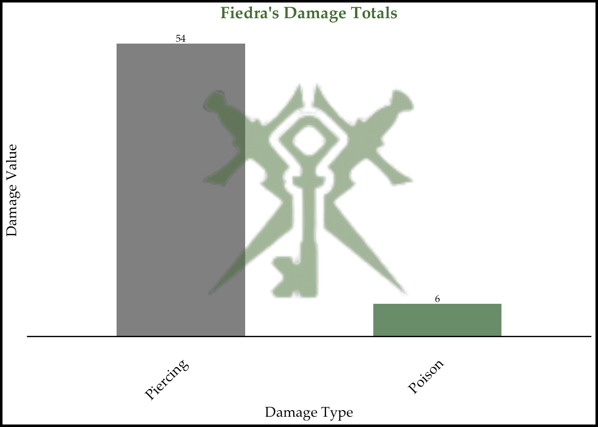
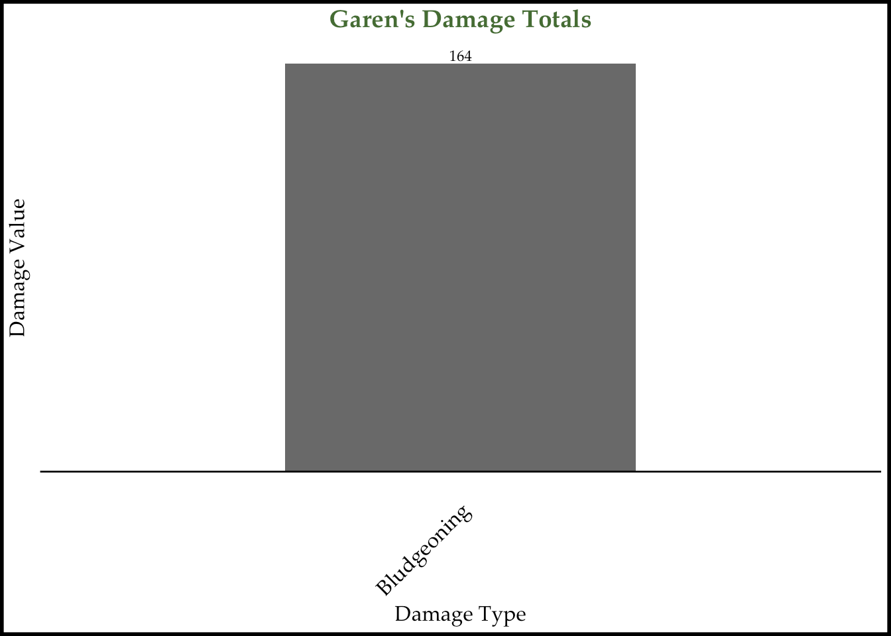
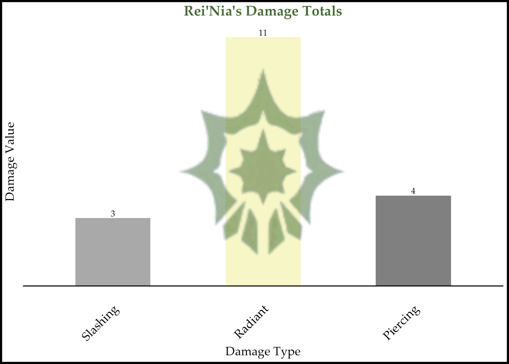
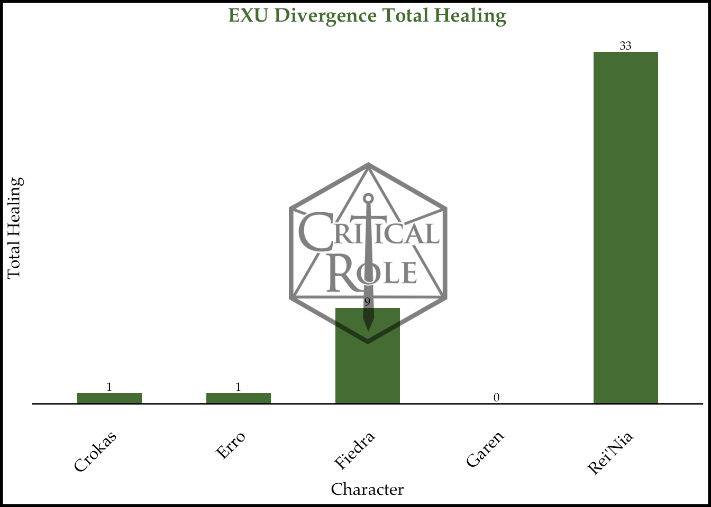
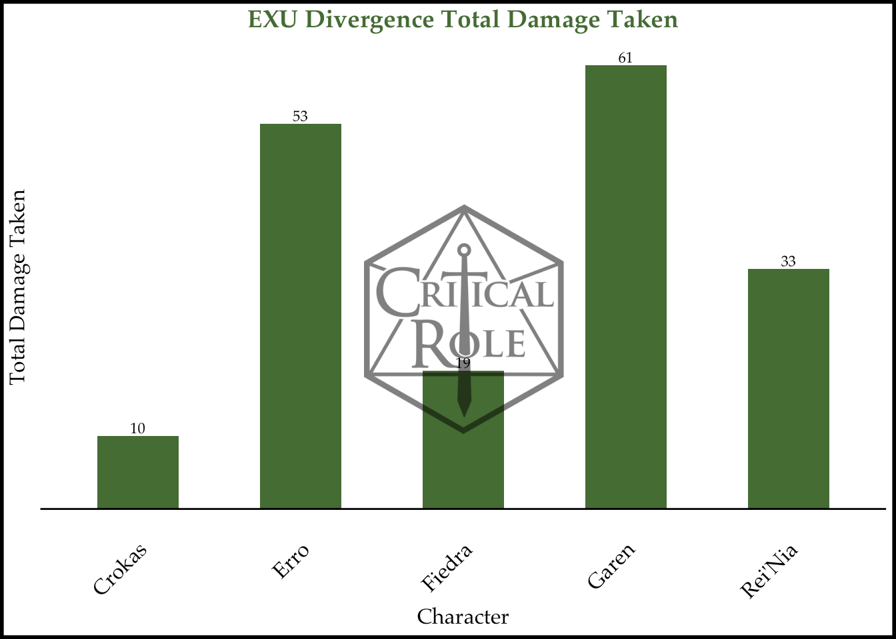
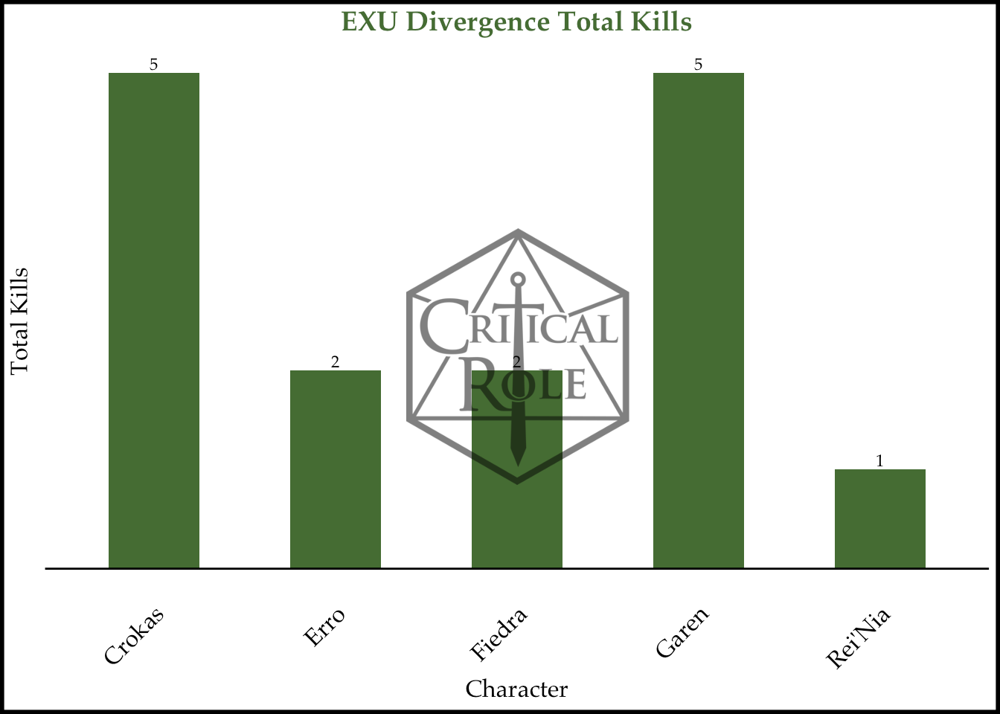
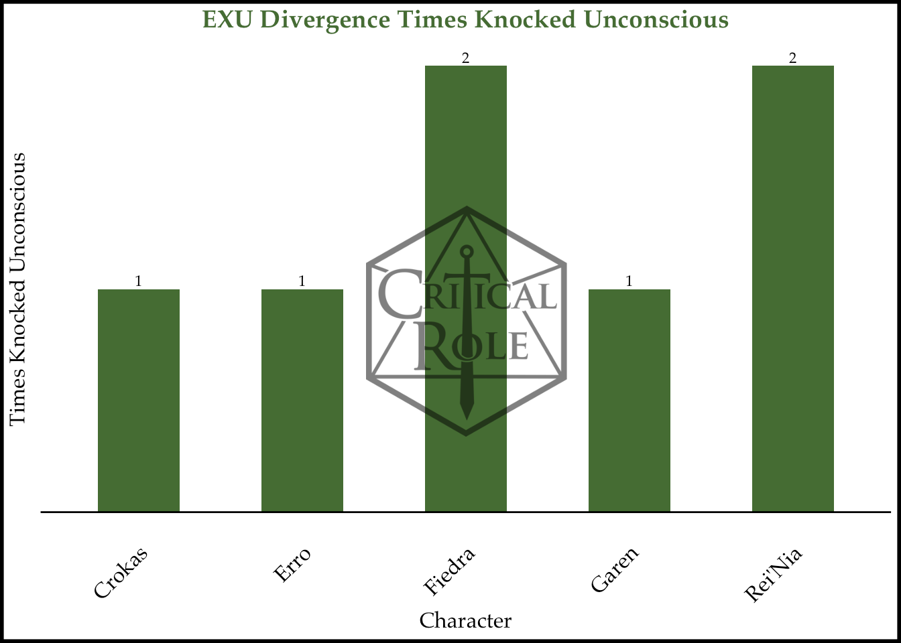
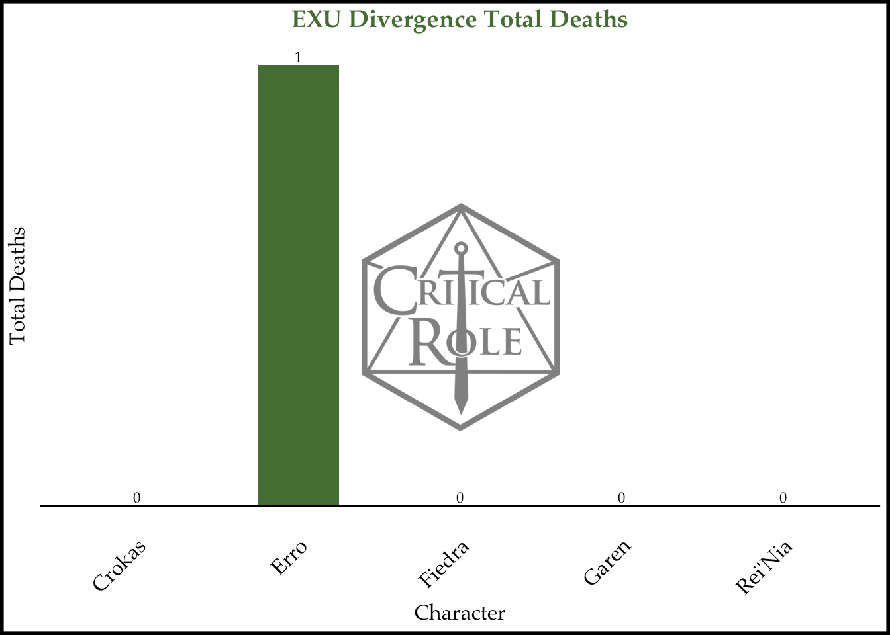
* Note, the damage totals are not 100% accurate, this could be from players not saying what damage type the attack did or separating damage types (such as Hex damage)
* The character artwork was made by: @